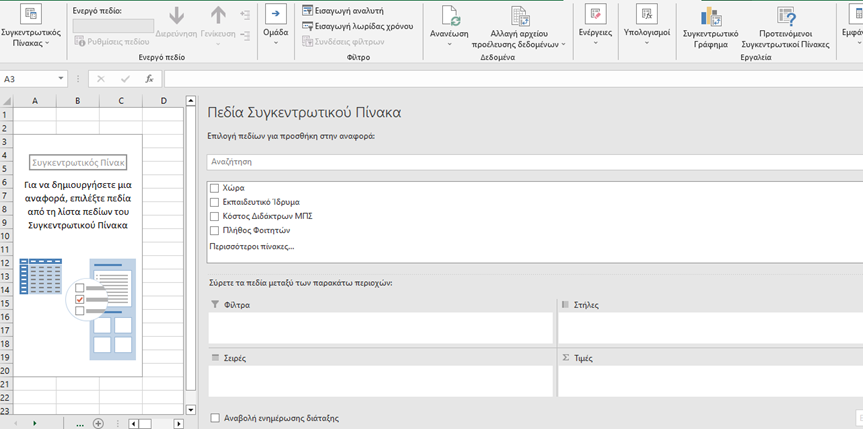
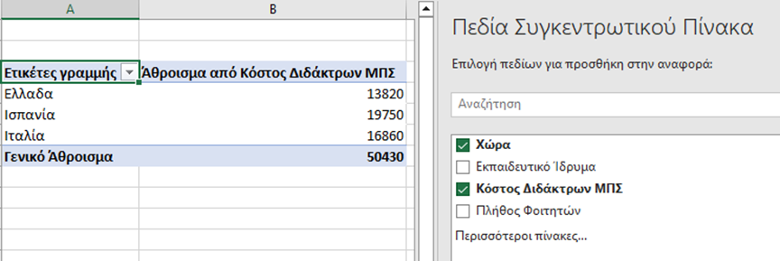

Pivot Tables
Οι «Συγκεντρωτικοί Πίνακες» βρίσκουν εφαρμογή σε φύλλα εργασίας με μεγάλη λίστα από δεδομένα, τα οποία είναι καταχωρημένα σε στήλες που η κάθε μία φέρει τη δική της επικεφαλίδα. Η διαδικασία δημιουργίας Pivot Table έχει ως εξής:
επιλέγουμε ένα οποιοδήποτε κελί στη συνέχεια στο μενού «Εισαγωγή» επιλέγουμε «Συγκεντρωτικός Πίνακας» όπου εφαρμόζουμε την περιοχή των κελιών για την οποία επιθυμούμε να φτιάξουμε Συγκεντρωτικό Πίνακα.
Μπορούμε να εμφανίσουμε τον Συγκεντρωτικό πίνακα σε νέο φύλλο εργασίας και να ξεκινήσουμε να εξάγουμε τα συμπεράσματα που επιθυμούμε από τα δεδομένα μας, από τα πεδία του Συγκεντρωτικού Πίνακα και την αλληλεπίδρασή τους με τα φίλτρα, τις στήλες, σειρές και τιμές.

Στον παρακάτω συγκεντρωτικό πίνακα (παράδειγμα) επιλέγουμε να εμφανίσουμε τη σχέση Χώρας - Άθροισμα από Κόστος Διδάκτρων ΜΠΣ :
